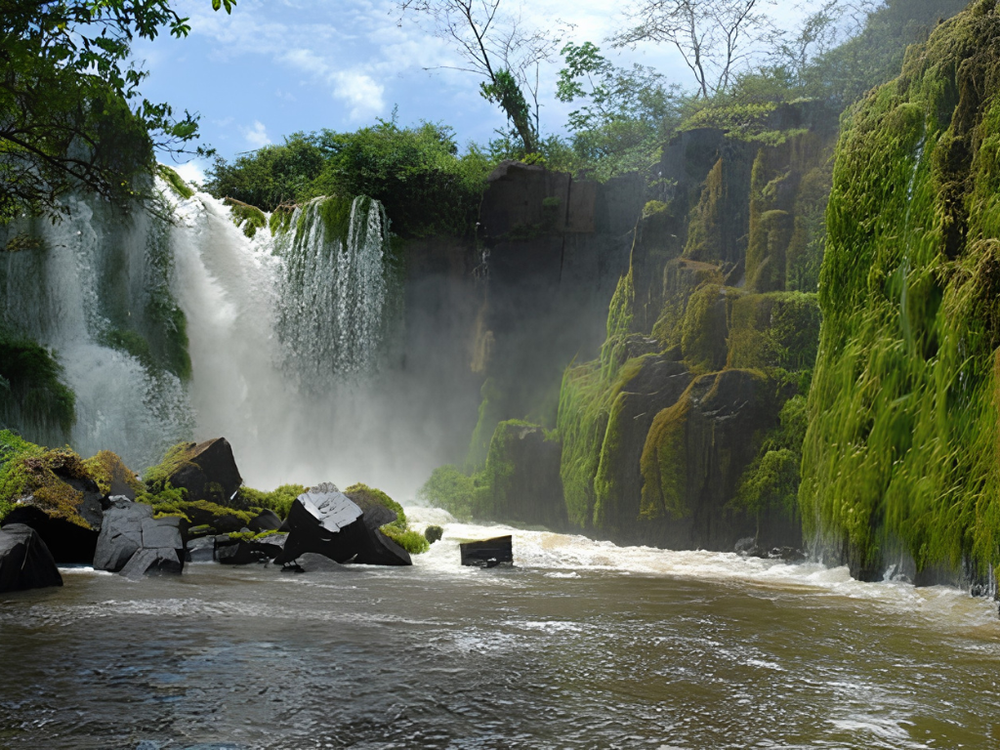

O Amapá é um estado localizado no extremo norte do Brasil, fazendo fronteira com a Guiana Francesa e banhado pelo Rio Amazonas. Conhecido por sua grande preservação ambiental, o Amapá possui extensas áreas de floresta amazônica, reservas naturais e rica biodiversidade, sendo considerado um dos estados mais preservados do país. Sua capital, Macapá, destaca-se por abrigar o famoso Marco Zero do Equador, monumento que marca a passagem da Linha do Equador pela cidade. Além das belezas naturais, o estado apresenta forte influência cultural indígena, africana e ribeirinha, refletida em suas tradições, culinária e manifestações populares, que tornam o Amapá um importante patrimônio cultural e ambiental brasileiro.

Voltar